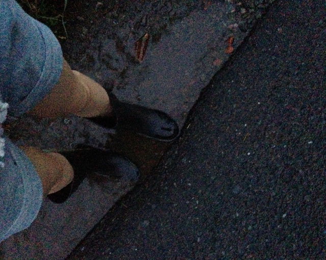
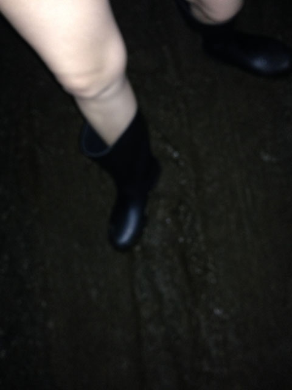
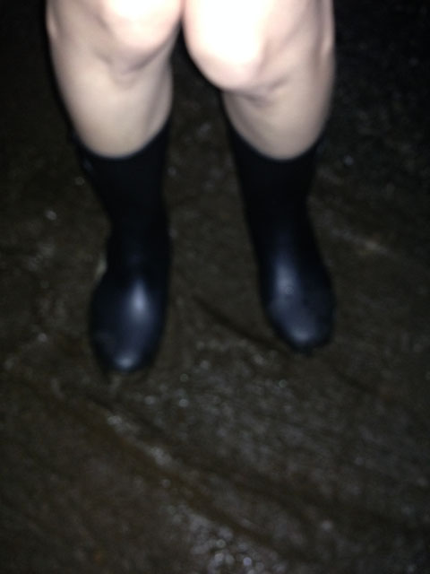
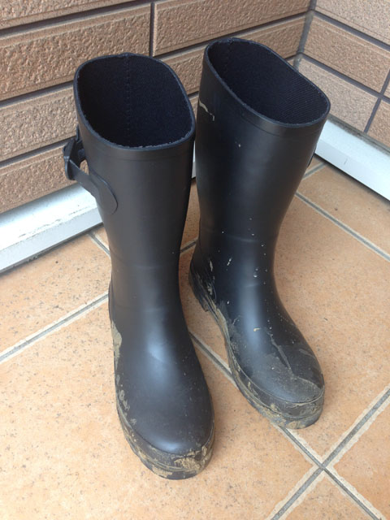

2014/06/08 21:00
2ヶ月ちょっと前からずっとモヤモヤしていたけれど、2日前のブログで今まで思っていた事や体験を夫に告白。
小学校からの学校帰り、雨の日は水溜りを探しては遊んで帰るの。
ドロドロになったヌカルミを見付けて足を突っ込んではヌルヌルにして…でも、家族にはバレない様に帰り道の水溜りで足元のヌルヌルを綺麗にしてから帰るの。
実家は農家だから、学校がお休みの日は長靴を履いて田んぼに行って、『お手伝い！』って事にしているけれど、本当はお気に入りの長靴でニュルニュルした泥んこの中に入りたくて…田んぼの中に足を突っ込むと、長靴にはいっぱいニュルニュルした泥がくっついてドキドキ。時には長靴の中にまで泥が入って来ちゃって、靴下までグチャグチャになっちゃうの。イケナイ！って思っててもまたやっちゃうの。
雨の日の学校の通学路は深い水溜りが出来ていて、そこを車が通る度『バシャッ！』って濁った水が飛び散って、汚れたら嫌な筈なのに何故かソレが自分に掛かってしまう事を期待してドキドキ。汚れてもいい様に雨の日はいつもランドセルの中に着替えをコッソリ忍ばせていたの。ビチョビチョになったまま帰ったら叱られてしまうと思うとゾクゾク…でも、家族に見付からない様に汚れた洋服は自分で洗濯をしていたから大丈夫！
実は無意識にそんな事を繰り返していたっていう事。夜になって、そんな話しを夫に打ち明けました。
告白してから2日後。
長靴を履きたくてウズウズ。前までは『気のせいだよ！』って自分に言い聞かせていたけれど、『本能による衝動』だって事に気付いてしまった。
打ち明けた事によって、気持ちは楽になったけれど、溢れ出す衝動を止められなくなっていった。
陽が落ちて辺りが暗くなった頃…
私『お金を引き出しにちょっとコンビニに行ってくるね』と長靴を履いて準備した。
夫は水溜りで遊んで来るんじゃないか？って少し疑っている様子。
私『直ぐ帰ってくるから大丈夫！』と行って出掛ける。
雨は止んでいて、道路もあまり濡れていない。長靴を履く程の状況ではないけれど、辺は暗いから気にしない！
コンビニまでの距離は意外と近い。田舎と言っても道は殆ど舗装されているので、深くてドロドロした水溜りはあまりないよね。期待はできないけれど、でも僅かな可能性に期待して想像するだけで凄くワクワクするの。
途中で小さな水溜りを見付た！さっそく水溜りに足を伸ばす。浅い水溜りなので『ピチャピチャ！』っという程度だけれど、胸の中でスーっとする様な感覚が広がって来るの。
もう少し先へ行くと…泥の塊を発見！足を入れたらどんな感じかな？凄くドキドキして、思いっきり足を突っ込んでみる。ネチョネチョしている…
『ATMでお金を引き出す』と言う目的を忘れていた事に気付き途中でやめて再びコンビニへ向かいました。コンビニに入って気づいたけれど、足元がドロドロ…恥ずかしい。。用事を済ませると人目を忍んでその場を立ち去る。
さっきのドロドロが気になって、もう一度泥の塊に足を踏み入れる。深いヌカルミと違って、車のタイヤに踏まれた泥がモッコリしている感じだけれど、踏付ければネチョネチョしている感覚が足まで伝わって来る。長靴と長靴を擦り合わせて、ヌルヌル、ネチョネチョを味わっていたら、車が来てしまった。
慌ててその場を立ち去る。暗くてよく解らないけれど、きっと長靴はグチョグチョ…来た道とは違う裏の道も気になったけれど、早く帰らないと怒られちゃうかな..
もうちょっと遊びたいな…でも、早く帰らなきゃ。汚してしまった長靴を綺麗にしなきゃ！って、水溜りを探したけれど、なかなか深そうな水溜りが無い。小さくてもイイや！って小さめの水溜りで長靴を擦り合わせていたら、車が何台も通過する。
落ち着いて水溜りに入っていられないので、とりあえず帰ろう！と帰宅。
私がしていた事は夫にはお見通しだよね…ちょっと恥ずかしいな。汚れた長靴が気になるけれど、玄関開けて直ぐ顔を合わせるのは恥ずかしいから、お出迎えを待たずにササーッっと階段を上がった。
長靴ね。やっぱりドロドロに汚れてた。そして汚れた長靴を夫に見られちゃった。凄く恥ずかしいけれど、なんか見られてドキドキしちゃって不思議な気持ちでした。
